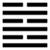

Thủy Hỏa Ký Tế (既濟 jì jì)
Quá là hơn, tài đức có chỗ nào hơn người trong một việc gì đó thì làm nên việc ấy, cho nên sau quẻ Tiểu quá tởi quẻ Kí tế. Tế là vượt qua sông, là nên; kí tế là đã vượt qua, đã nên, đã thành.
Thoán từ:
既濟: 亨小, 利貞．初吉, 終亂．
Kí tế: Hanh tiểu, lợi trinh. Sơ cát, chung loạn.
Dịch: đã xong: Hanh thông, nếu làm nốt các việc nhỏ, cố giữ được những việc đã thành rồi thì mới lợi. Mới đầu tốt, cuối cùng thì loạn (nát bét).
Giảng: Trong thoán từ này, hai chữ ‘Hanh tiểu”, Chu Hi ngờ là “tiểu hanh” mới đúng; tiểu hanh nghĩa là việc nhỏ, được hanh thông. Chúng tôi cho cách hiểu của Phan Bội Châu (theo Thoán truyện) là đúng hơn, nên dịch như trên.
Quẻ này trên là nước, dưới là lửa. Lửa có tính bốc lên mà ở dưới nước, nước thì chảy xuống, thế là nước với lửa giao với nhau, giúp nhau mà thành công. Cũng như nồi nước để ở trên bếp lửa, lửa bốc lên mà nước mới nóng, mới sôi được.
Lại xét sáu hào trong 1 : hào dương nào cũng ở vị dương hào âm nào cũng ở vị âm; mà hào nào cũng có ứng viện: 1 dương có 4 âm ứng; 2, âm có 5 dương, ứng; 3, dương, có 6 âm ứng; đâu đó tốt đẹp cả, mọi việc xong xuôi, thế là hanh thông.
Ở vào thời Kí tế, việc lớn đã xong, còn những việc nhỏ cũng phải làm cho xong nữa, thì mới thật là hoàn thành. Hoàn thành rồi lại phải cố giữ được sự nghiệp; nếu không thì chỉ tốt lúc đầu thôi mà rốt cuộc sẽ nát bét. Nghĩa lúc trị phải lo trước tới lúc loạn.
Thoán truyện giảng mới đầu tốt vì hào 2 ở nội quái có đức nhu thuận mà đắc trung; và rốt cuộc sẽ loạn vì ngừng không tiến nữa, không đề phòng nữa (chung chỉ tắc loạn).
Đại Tượng truyện cũng căn dặn phải phòng trước lúc loạn, lúc suy.
Ý nghĩa các hào :
1.
初九: 曳其輪, 濡其尾, 无咎．
Sơ cửu: duê kì luân, nhu kì vĩ, vô cữu.
Dịch: Hào 1, dương: kéo lết bánh xe (chậm lại), làm ướt cái đuôi thì không có lỗi.
Giảng: hào này là dương, có tài, ở trong nội quái Ly (lửa) có tính nóng nảy, lại ở đầu quẻ Kí tế, có chí cầu tiến quá hăng. Nên hào từ khuyên phải thận trọng, thủng thẳng (kéo lết bánh xe lại), chưa qua sông được đâu (như con chồn ướt cái đuôi, không lội được), như vậy mới khỏi có lỗi.
2.
六二: 婦喪其茀, 勿逐, 七日得．
Lục nhị: Phụ táng kỳ phất, vật trục, thất nhật đắc.
Dịch: Hào 2, âm: Như người đàn bà đánh mất cái màn xe, đừng đuổi theo mà lấy lại cứ đợi bảy ngày sẽ được.
Giảng: Hào này ở giữa nội quái Ly, có đức văn minh, trung chính, có thể thực hiện được chí mình. Nó ứng với hào 5 dương cương, trung chính, ở địa vị chí tốn; nhưng ở thời Kí tế, đã xong việc, nên 5 không đoái hoài tới 2, thành thử 2 như người đàn bà có xe để đi. Mà đánh mất cái màn che bốn mặt xe, không đi được. Tuy nhiên vì 2 trung chính mà đạo trung, chính không bị bỏ lâu bao giờ, nên đừng mất công theo đuổi, cứ đợi rồi tự nhiên sẽ được như ý.
3.
九三: 高宗伐鬼方三年,克之．小人勿用．
Cửu tam: Cao tôn phạt quỉ Phương tam niên, khắc chi. Tiểu nhân vật dụng.
Dịch: Hào 3, dương: Vua Cao Tôn đánh nước Quỉ Phương, ba năm mới được, đừng dùng kẻ tiểu nhân.
Giảng: Hào này là dương ở vị dương, nên quá cương cường, hoá ra khinh suất, phải thận trong như vua Cao Tôn, tức Vũ đinh (1324-1264) nhà Ân, khi đánh một rợ nhỏ là quỉ Phương mà cũng mất ba năm mới được.
Đừng dùng kẻ tiểu nhân là lời khuyên chung, chứ không phải chỉ khuyên riêng hào 3 này.
4.
六四: 繻有衣袽, 終日戒．
Lục tứ: chu hữu y như, chung nhật giới.
Dịch: Hào 4, âm: Thuyền bị nước vào, có giẻ để bít lỗ, phải răn sợ suốt ngày.
Giảng: Đã bắt đầu lên ngoại quái Khảm, nguy hiểm, phải phòng bị cẩn thận, như người ngồi chiếc thuyền bị nước vào, phải có giẻ để bít lỗ. Hào này âm nhu, ở vị âm, đắc chính, là người thận trọng biết lo sợ.
5.
九五: 東鄰殺牛, 不如西鄰之禴祭, 實受其福．
Cửu ngũ: Đông lân sát ngưu, bất như tây lân chi thược tế, thực thụ kì phúc.
Dịch: Hào 5, dương: Hàng xóm bên đông mổ bò (làm tế lễ lớn) mà thực tế không hưởng được phúc bằng hàng xóm bên tây chỉ tế lễ sơ sài.
Giảng: Hàng xóm bên đông là hào 5, bên tây là hào 2. Cả hai hào đều đắc trung, đắc chính, lòng chí thành ngang nhau; 5 ở địa vị chí tôn làm lễ lớn, nhưng được hưởng phúc thì 2 lại hơn 5, chỉ vì 2 gặp thời hơn; 2 ở vào đoạn đầu Kí tế sức tiến còn mạnh, tương lai còn nhiều; 5 ở vào gần cuối Kí tế, lại ở giữa quẻ Khảm (hiểm), tiến tới mức chót rồi, sắp nguy, thịnh cực thì phải suy.
6.
上六: 濡其首, 厲．
Thượng lục: Nhu kì thủ, lệ.
Dịch: Hào trên cùng, âm: Ướt cái đầu, nguy.
Giảng: tiểu nhân bất tài (hào này là âm) ở thời cuối cùng của Kí tê, lại ở trên hết quẻ khảm, càng nguy nữa, như một người lội qua sông, nước ngập cả đầu.
*
Kí tế vốn là một quẻ tốt, nhưng chỉ ba hào đầu là khá tốt, còn ba hào sau thì càng tiến lên càng xấu: hào 5, kém phúc hào 2, mà hào trên cùng (ướt đầu) so với hào 1 (ướt đuôi) còn xấu hơn nhiều. Vẫn là lời khuyên gặp thời thịnh phải cẩn thận, đề phòng lúc suy.